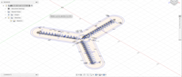
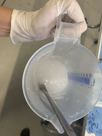
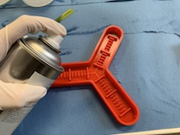
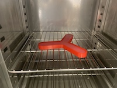
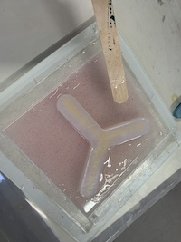
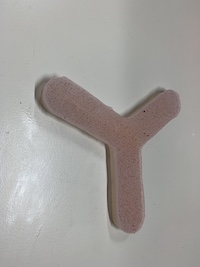
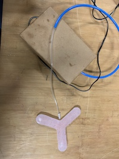

SOFT ROBOTICS
16 November 2018
Description of the process:
- Design the mold in Fusion 360, using "Extrusion" for making what later will be the air conducts.

- Trabsfer the file to Ultimaker Cura, to prepare the piece to be 3D printed.
- Print the piece in the 3D printer.
- Mix the components A and B in the same portion.

- Spry the mold in order to avoid the material to get sticked on it.

- Put the piece in the oven for 15 minutes.


- Prepare a base for the piece using the same components and time in the oven.
- Put the piece and the base together using some more material in the sides.

- Take the final piece, stick a needle in the middle of it and put air in to try the Soft Robotics.


- It didn´t work out as expected because the base didn´t have the same thickness in all of it so the air make bubbles in the thinest parts.